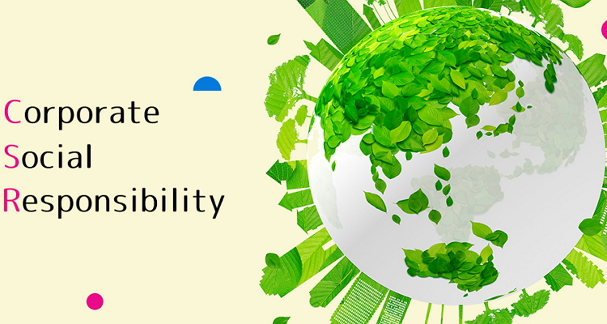

In today's time, we know we are facing a lot of environmental issues, for example, climate change, air pollution, water pollution and deforestation. Our natural resources are also depleting day by day, it’s almost as if nature itself is dying. We know that our survival relies on it. CSR stands for Corporate Social Responsibility, an approach towards a sustainable future. By adhering to CSR corporations will not only be responsible for themselves but for society and the environment too. They should be equally responsible socially and environmentally so that they can make a positive impact.

To fulfill this responsibility corporations are putting considerable effort through various means. These objectives aren’t limited to just environmental impacts either; ethical responsibility, financial responsibility, and philanthropic aspirations come with it too. India is the very first country to make CSR mandatory under Section 135 of the Companies Act 2013 amendment in 2014.
CSR plays a role in addressing challenges. For instance; Waste management: Businesses are actively working towards managing waste through reduction composting, recycling and responsible disposal of waste products.
Conservation of resources: Companies strive to conserve resources like water, energy, metals and materials through conservation programs and ethical sourcing practices.
Preservation of biodiversity: Initiatives to combat deforestation, implementing farming policies and promoting afforestation are undertaken by businesses to protect biodiversity without harming the environment.
Pollution reduction: Enterprises are dedicated to reducing emissions and pollutants while developing techniques for minimizing water and air pollution.
Utilization of Renewable energy sources: By investing in efficient energy resources along with adopting energy-saving measures companies are making significant contributions.
Wildlife Conservation: Deforestation, illegal trading and poaching of animals, habitat loss, industrialization around forest reserves, and the release of toxic gasses and fumes into the air can lead to the death of some species and damage existing plant life.The government has also declared certain areas protected and will take strong action if any corporation does not follow the rules. These CSR initiatives will act as a damage repair to the harm done by us.Environmental sustainability revolves around safeguarding resources for generations. The major global concerns include water depletion, disposal of waste, climate change and an efficient energy supply. Through CSR adherence corporations take steps to tackle these issues.
TATA Group: Community development and philanthropic investment are their biggest commitments.Amazon's commitment is to become net-zero carbon by 2040.
Ultratech Cement: Their CSR initiatives include social upliftment and economic development of the communities.Google: Google wants to run its data centers on 100% renewable energy by 2030.
Microsoft: Microsoft wants to become carbon-negative by 2030 and water-positive by 2034.
CSR initiatives are developing a strong relationship between employees and businesses.Apart from the environmental benefits, there are also other important reasons why corporations should implement corporate social responsibility.
Brand recognition: When people see that a company is socially and environmentally responsible, they feel connected, consider that brand trustworthy and reliable, and build a strong relationship with that company, which certainly increases the brand's value and recognition.
Risk management: Corporations that practice CSR have better risk management than others. This is because if a corporation is following CSR, it shows that they are ethical and transparent in their financial fundraising activities and are socially responsible. They will not perform any unethical activity that will hamper their status.
Investor Relationship: According to a study, the Boston Consulting Group found that companies with strong CSR performance outperformed their peers on the stock market by 5.3% per year. This indicates that investors are more interested in investing in companies that are less likely to be involved in unlawful activities. Employees are increasingly drawn to businesses that are committed to CSR.
Customer and Employee Relationship: Customers and employees are more attracted to companies that are committed to CSR. A study by Nielsen found that 66% of global consumers are willing to pay more for products and services from businesses that are following CSR.
Corporate social responsibility (CSR) is one of the best practices that a corporation can perform because it is good for everyone for people and their society, the environment, and also for the other communities. Although there are some difficulties involved, but the benefit is much greater than the cost and without any doubt it is an important step towards a brighter, more sustainable future for the coming generations.
Leave a comment